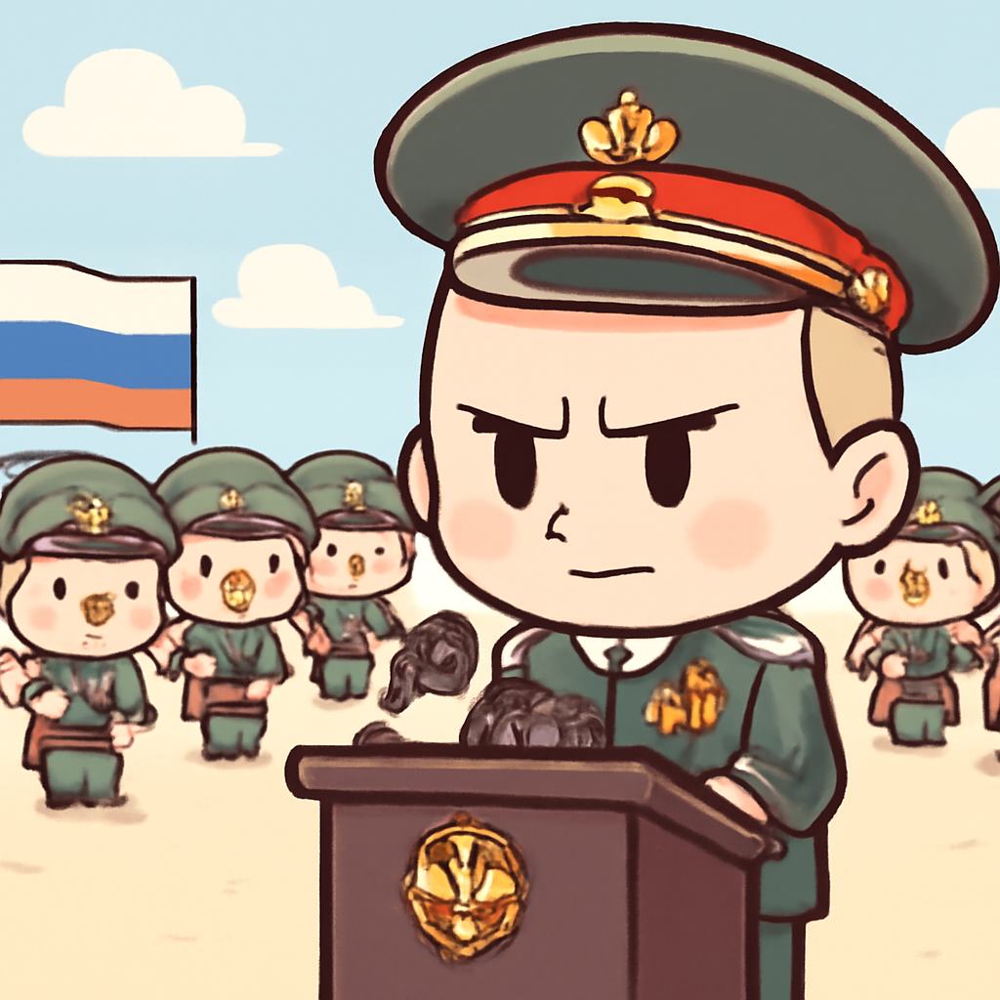
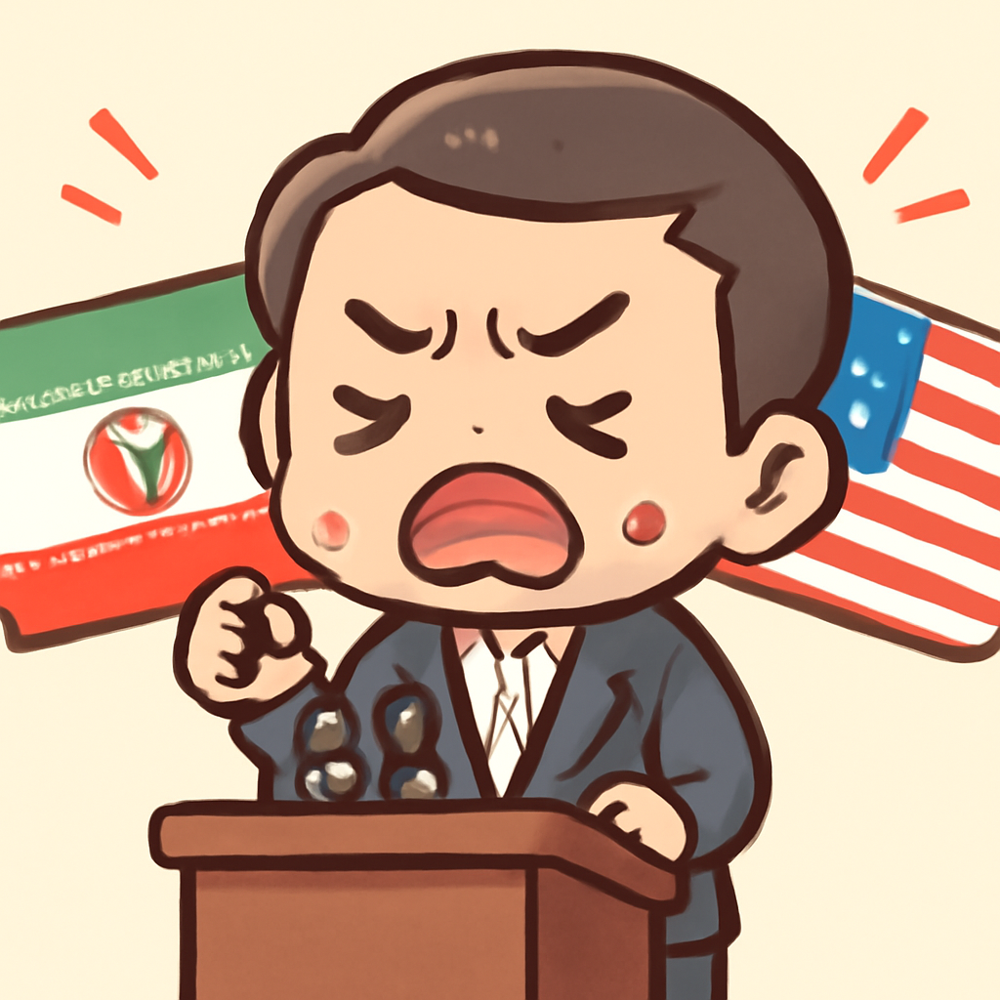
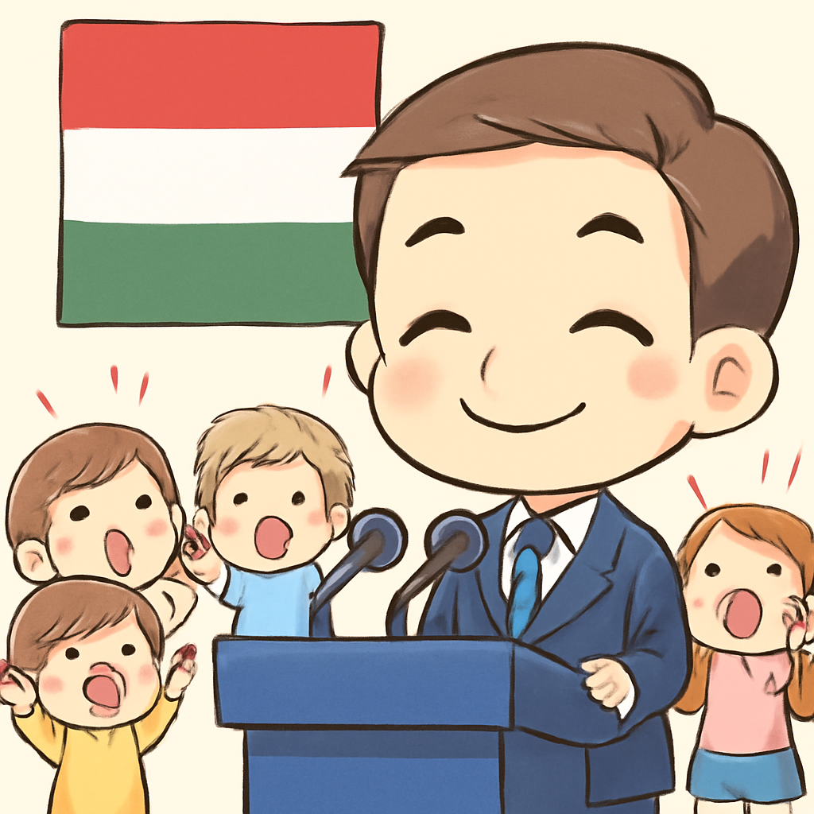

其一 · 俄羅斯莫斯科 · 普京在勝利日閱兵上抨擊北約
普京在縮減版的閱兵中批評北約與烏克蘭局勢

在俄羅斯莫斯科，普京在縮減版的勝利日閱兵中抨擊北約，並為他所謂的特殊軍事行動辯護。這次閱兵規模縮小，反映出俄羅斯在烏克蘭戰爭中的脆弱與不安。看來，普京不僅要對付敵人，還得對付越來越多的疑慮。
🔗 原始新聞 ↗
2026-05-10 · 以古觀今，以笑抗愁
普京在縮減版的閱兵中批評北約與烏克蘭局勢

在俄羅斯莫斯科，普京在縮減版的勝利日閱兵中抨擊北約，並為他所謂的特殊軍事行動辯護。這次閱兵規模縮小，反映出俄羅斯在烏克蘭戰爭中的脆弱與不安。看來，普京不僅要對付敵人，還得對付越來越多的疑慮。
🔗 原始新聞 ↗
伊朗指控美國在外交解決前發動攻擊

伊朗外交官阿巴斯·阿拉基奇在德黑蘭表示，美國在每次有外交解決方案的時候，反而選擇進行軍事攻擊。這種指控不僅增添了地區緊張局勢，也可能影響未來的談判進程。看來，外交的路上總是布滿荊棘。
🔗 原始新聞 ↗
新任總理馬基亞承諾推動改革，改變匈牙利政治

在匈牙利布達佩斯，剛上任的總理彼得·馬基亞表示，他將致力於為人民服務，而非統治他們，這標誌著他與奧班執政黨的強烈對比。這場政治變革可能會改變匈牙利未來的政治格局，讓人期待他接下來的表現。
🔗 原始新聞 ↗
英國選舉制度遭到新興政黨挑戰，面臨分裂危機
在英國倫敦，選舉結果顯示，新的政黨如改革英國黨正在崛起，這讓英國的選舉制度感到壓力。隨著選民基礎的分裂，未來的政治形勢可能會更加複雜，這讓許多人擔心，是否能找到共識。
🔗 原始新聞 ↗
新的估計顯示俄烏兩方死亡人數超過35萬
根據最新報告，俄羅斯在烏克蘭戰爭中的死亡人數已超過35萬，這意味著兩方的死亡人數可能接近50萬。這一數字不僅令人震驚，也讓人對這場戰爭的未來感到擔憂，真希望這場衝突能快點結束。
🔗 原始新聞 ↗